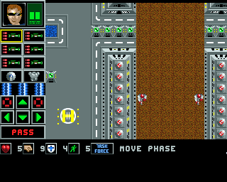

Exploring Task Force analyzes the 1990s freeware strategy game
_Task Force_ for Commodore Amiga.

ANOTHER ONE DOWN.
{% assign sortedPosts = site.posts | sort: 'slug' %}
About
{% for post in site.posts %}
{% if post.categories contains "about" %}
- {{ post.title }}
{% endif %}
{% endfor %}
Analysis
{% for post in sortedPosts %}
{% if post.categories contains "analysis" %}
- {{ post.title }}
{% endif %}
{% endfor %}
Data
{% for post in sortedPosts %}
{% if post.categories contains "data" %}
- {{ post.title }}
{% endif %}
{% endfor %}
Links
- Task Force official download
- Exploring K240, a similar project for the 1994 Amiga strategy game
- Exploring the Dungeons of Avalon, a similar project for a 1992 RPG series
« Tetracorp homepage